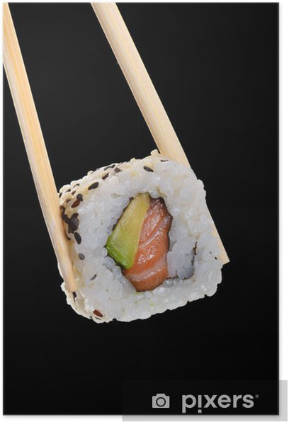

ce sont les meilleurs sushi du monde
voici un restaurant a sushi comptoir umami
Les sushis viennent du japon ,ils peuvent avoir plusieurs formes ils peuvent etre rond comme (les california rolls)ect...
Ils sont generalements composé de saumons de riz d'avocats et d'algues
les sushis on été inventé par Hanaya Yoei mais les sushis proprement dits ne sont apparus qu'au XIXe siècle à Edo, la future Tokyo.
